A fan-made English guide to Spike's 2003 PlayStation 2 wrestling game, written alongside the English fan translation: every mode, Edit Mode, the seven story scenarios, and full profiles of all 244 wrestlers with their moves and CPU logic.
A fan-written guide to Fire Pro Wrestling Z, a Japan-only PlayStation 2 game from Spike. It was written alongside the English fan translation, so names and menu labels are the ones the translation shows. The translation comes in two versions, with the wrestlers' real names or the game's own parody names; the Names switch in the sidebar shows this guide's names either way.
The title screen. Everything from here on is in English except the logo.
Fire Pro Wrestling Z came out for the PlayStation 2 on 5 June 2003, published by Spike, in Japan only. The Fire Pro team known inside the series as S-NEO made it with Paon. It looks modest for its year: flat sprite wrestlers on a tilted ring, viewed corner-on, the same view the series has used since the Super Famicom. That is the point. Fire Pro has never been about button-mashing or big health bars. It is a game of timing, stamina and wrestling logic, where a match rises and falls like a real one and the best moment of the night might be a two-count.
The box signed the series off with Thank you, Fire Pro. Goodbye, Fire Pro, and it sold about 61,000 copies, more than Fire Pro Wrestling D before it. Two years later Fire Pro Wrestling Returns took the farewell back.
The disc holds 244 wrestlers, 1,448 moves, five match types from a plain three-count to an exploding cage, a wrestler maker with room for 216 saved wrestlers, six Victory Road title chases adding up to 343 wins, and seven story scenarios telling real careers across more than 12,000 pages of text. One of those scenarios sat on the disc unfinished and unreachable, and is playable for the first time in this translation's All Unlocked patches.
What Z Adds to Fire Pro D
If you know Fire Pro Wrestling D, you know most of this game. The rules, the numbers and most of the moves carried over, so here is what changed.
Story mode, gone since Fire Pro Wrestling G on the PlayStation, is back and much larger.
Ground counters. A move on a downed opponent can now be reversed, so ground work is no longer free.
Three weapon attacks, one on each button, instead of one swing.
Layered edit parts in the wrestler maker, and more than 170 moves new since D, most of them D's downloads built into the game.
The critical labels tell the truth. In D, the Skill Edit list showed the wrong type for most choices. Z fixed that, so the label is what you get.
Gone: D's Network Mode, most of the WWE roster (their moves and costume parts stayed, for you to rebuild them), and the six-to-eight human player matches. Z takes four players on a Multitap.
The grapple feels different too. D players should expect to relearn the timing: see Grappling.
Saving
The file list. Each file shows Empty, New, Edited, Saved or Reload.
The game loads from the memory card by itself at boot and needs at least 64 KB free to save its system data. You can start without a card; it asks first. Save your progress from Save / Load on the main menu. If Save Confirm is on in Options, the game also offers to save when you leave a screen that changed something.
A full set of files takes about 312 KB. On the card they sit in a folder called BISLPM-62287, which is worth knowing if you back up your saves: the number doesn't match the disc's serial, and that is normal. The card's title stays in Japanese.
Saves from the original Japanese game, or from a different patch, may not be compatible. Start a new save with the patch you plan to keep.
Quick Save is separate. Story mode, Victory Road, tournaments and leagues each keep their own place inside System Data; One Night Match, Battle Royal, Elimination and Title Match have none. It's offered between matches. Remember that this is still only memory: save to the card from Save / Load, or say yes when the game asks, before you turn it off.
Your First Match
The main menu. The line at the bottom says what each mode does.
The game has no tutorial and no controls screen, and the printed manual barely helps. Spend ten minutes on this and everything else will make sense.
On the main menu choose One Night Match, then Normal Match.
On Match Settings, set COM Level to 1 with Left and Right. Leave the rest. Press Start to go on.
Choose a wrestler you like. Heavyweights with a simple move set, like Toshiaki Kawada, are forgiving. Choose an opponent.
When the bell rings, walk into him. No button: touching him starts the lock-up.
Count to one, then press □ once. Your wrestler does a small grapple move. Weak grapples like this can never be reversed. Do it again.
After a few of those, try ×, then later ○. Those are bigger and hit harder, but on a fresh opponent they will get reversed.
Knock him down. Stand at his head and press × or ○ for a ground move. Find the pin in your wrestler's list, or press □ to pull him up.
When he can barely get up, use your finisher and pin. A pin only sticks on a wrestler who's nearly finished. If you get pinned, hold ×.
There are no health bars. You read the match from the wrestlers: a slow get-up, slumped shoulders, a stagger. That is the game. Next, read Grappling, because the lock-up decides almost everything.
Controls
If you played D: its A, B, X and Y are ×, ○, □ and △ here, and L and R are L1 and R1.
Button
In a match
D-pad
Walk. With an attack button, choose the move.
□
Weak attack.
×
Medium attack. Hold under a pin to kick out, or when down to stay down. Press to let go of your own hold.
○
Strong attack.
□ + ×
The fourth attack, wherever there is one. Press both together.
△
Run. In a grapple, Irish whip. Pick up or drop a weapon.
L1
Hold to catch your breath. Tap with a direction to tag. Tap to dodge a runner.
R1
Hold to keep your target and walk freely. Tap in a grapple for a front facelock. Drag a downed opponent.
Left stick
Four taunts: Left, Right, Up, Down.
Start
Pause: Continue or To Mode Select.
Right stick, L2, R2, Select
Nothing in a match.
The Diamond View
This trips up everyone once. The camera looks at the ring from a corner, so the four posts are at the screen's left, right, top and bottom, and each rope runs along a screen diagonal. So when this guide says toward the ropes it means a diagonal on the D-pad, and toward a post means a plain Left, Right, Up or Down.
Grappling
The lock-up. Press in the instant the wrestlers sink, and only once.
Walk into your opponent and both wrestlers lock up. Neither can act for a moment. Then comes the one piece of timing that matters more than anything else in Fire Pro.
The window opens 33 frames after contact, a little over half a second, at the moment the wrestlers sink at the knees.
The first press after that wins the grapple. The window never closes: if neither side presses, they stand there.
Press too early and you are locked out for 32 frames, counted from that press. More presses in that time are ignored. This is why mashing loses grapples.
Only a fresh press counts. Holding the button down beforehand does nothing.
Any of □×○△R1L1 takes the window. If both sides press on the very same frame while both are above about 81% stamina, you get a Test of Strength instead: fresh D-pad presses score, up to six rounds, and the most presses wins.
The CPU's speed is its difficulty. Here is how quickly it presses, counted in frames from contact, with the window opening at 33:
COM Level
CPU pressed on frame
What that means
1
36 to 103
Easy to beat every time.
2
34 to 62
Comfortable practice.
4
34 to 47
Half the time within a frame or two of the opening.
6
34 to 39
You need to be on it.
8, 10
34, every time
You have one frame. You'll lose most of these, so fight another way (see Against the CPU).
In a front grapple
Input
Does
□ alone, or with Up, Left/Right, Down
Weak grapple. Four slots.
× alone, or with Up, Left/Right, Down
Medium grapple. Four slots.
○ alone, or with Up, Left/Right, Down
Strong grapple. Four slots.
□ + ×
The fourth grapple. Usually the wrestler's biggest.
R1
Front facelock: walk him around. It lasts about half a second on a fresh opponent and up to nearly five on a spent one. It can be reversed.
R1 near the ropes
Throw him to the apron. Up or Down picks which way you face.
△
Irish whip. Up or Down picks the direction.
△ + Left or Right near that side's post
Ram him into the post. Only the left and right posts work.
△ straight at ropes you are standing beside
He goes out of the ring. From the floor by the apron, this throws him in.
Behind him
Input
Does
□, ×, ○
Back grapples, weak to strong.
○ + Up or Down
Second strong back grapple.
○ + Left or Right
Third strong back grapple.
□ + ×
Fourth back grapple.
△
Whip him away.
R1
Hold his arms for your partner.
R1 + Up
Lift him onto your shoulders.
Grabbed from behind: □ or × in the window
Reverse it (Back Rev).
Striking
Input
Does
□ / ×
Weak and medium strike.
○
Strong strike.
○ + any direction
Second strong strike.
□ + ×
Fourth strike.
A runner is coming: □ / ×
Counter him.
A runner is coming: L1
Dodge: a duck, leapfrog or slide, by Fight Style. Some styles have none.
Strikes aren't checked for reversals, need no timing, and work against CPU levels you can't out-grapple.
Running and Flying
Kendo Kashin at a run. Running burns breath fast, so choose your moment.
Input
Does
△
Run. The direction comes from what you hold. Left or Right on the ring's middle line runs the long diagonal, post to post.
Tap a direction opposite your run
Stop. It has to be a fresh press. Few players know this one.
□ / × while running
Running attack.
Hold○ at a downed foe
Running attack on a downed opponent (Run Down).
Hold○ at the ropes, foe outside
Dive through the ropes (Run Out). Press early: the game reads his position when you reach the ropes.
On the diagonal, hold○ at a foe in the corner
Run Corner.
On the diagonal, hold□ or × into the post
Run-Up move. Needs Climb/Run Up set to Run Up.
Running costs 12 breath a frame, and an empty tank stops you dead. Luchadors and Panthers may hop onto a post by themselves on a diagonal run.
When you are whipped, □ on the exact frame you hit the ropes grabs them and stops you, and × stops the rebound and lets you run on under your own control. It really is one frame, so treat it as a party trick. Some styles grab the ropes by themselves.
Top rope
Up on the post. A plain direction toward it and □ or × takes you up.
Input
Does
□ or × + plain direction, standing by a post
Climb. Any of the four posts, unless the wrestler is set to Can't Climb.
On the post: □, ×, ○, □ + ×
Four top-rope moves.
On the post: Down
Climb down.
Foe on a post: □ or × toward him
Grab him up there, from below or the apron.
Climbing adds to a downed foe's wait before he gets up, a little from the ring and twice as much from the apron, so dives have time to land.
Ring edge, apron and floor
On the floor. A ring-out count runs while you're out here.
Where
Input
Does
In the ring, by the ropes
□ + diagonal to the ropes
Drop to the floor.
× + diagonal to the ropes
Step out onto the apron.
○ + diagonal, foe outside
Springboard out (Apron Out).
On the apron
□ or × toward the ring
Step back in.
□ or × toward the floor
Drop down.
○ toward the ring
Springboard in (Apron In).
□ toward the post
Climb it.
× toward the post
Swing round to the next side.
R1 toward the ring, foe close
Grab him over the ropes.
On the floor, facing the ring
□ toward the ring
Roll straight in.
× toward the ring
Get onto the apron.
△ toward the ring
Pull a weapon from under the ring. At most three can be out.
Downed Opponents, Pins and Holds
A pin is a move. There is no pin button: it sits in your ground move slots.
Stand at his head or his legs. The wrestler turns to face him by himself. Moves on a downed opponent can be reversed in Z, so soften him up first.
Position
□
×
○
R1
Head, face up
Lift by the hair
Up Head
Up Head
Drag
Legs, face up
Roll him over
Up Legs
Up Legs
Drag
Head, face down
Roll him over
Down Head
Down Head
Drag
Legs, face down
Lift by the tights
Down Legs
Down Legs
Drag
R1 drags on its own: holding a direction changes nothing. Up Head and the rest are the Move Edit rows of those names. Every wrestler keeps a pin or two there, so check his list.
When you are underneath
Situation
Input
Does
Being pinned
Hold×
Kick out, once your pin timer has run down. See How Pins Are Won.
In a submission hold
Fresh D-pad presses
Each press takes time off the hold, and any direction counts. Holding a direction does nothing, and neither do the buttons.
Down, able to rise
Hold ×
Stay down. Uses spirit, and works for up to six rolls.
Down, holding ×
Up or Down
Roll. At the ropes this takes you out of the ring: a free breather.
Getting up
Hold □ or ×
Stay crouched a moment longer. Strikes pass overhead.
Stunned
Any button, fresh presses
Wake up sooner.
Your own pin or hold: × lets go, which also stops a Foul Count.
Guard, Facelock and Mount
A hold on the mat, with the referee checking for a submission.
Some moves put you into a timed position on the mat: Guard (facing him, called Mount in D), Front Facelock and Back Mount. On top you get □×○ attacks. Underneath, any button answers with a reversal. They run on the same window and lockout as a lock-up, so watch for the legs wrapping or the torso leaning back, and press once. In Move Edit these are the rows Guard Atk and Guard Rev, FL Atk and FL Rev, Mount Atk and Mount Rev. In this game "Mount" always means the back mount.
Weapons
Weapons wait under the ring. On the floor, press △ toward the ring to pull one out. To pick up one at your feet, press △ and hold Down, because a plain tap makes you run. With a weapon, △ drops it, and three attacks are new in Z: □ a jab, × a side swipe and ○ a head shot, doing roughly 2%, 5% and 10% of a fresh foe's stamina. The range is narrow, and the weapon stays in your hand after a swing. Grappling, taking a hit or being run into knocks it out of your hand. In a Tubes match, △ plus a plain direction to a post takes a light tube.
Tag and Team Matches
A tag match. The partner waits on the apron until he's tagged.
Input
Does
L1 + the diagonal toward your partner
Tag, near his stretch of rope. Works while walking a foe in a facelock too.
Partner being pinned or held: □ or × near him
Run in and break it up. Needs Cut Play on.
Two or three of you on one foe, any button at the window
Double-team and triple-team moves (Front, Back and Corner Duo or Trio).
Hold R1
Keep your target in a crowd. Let go and the nearest foe is your target again.
Tagging is off in Tornado Battle, where everyone is legal at once.
Menus
○ confirms and × goes back. Left and Right change a value. Start goes on from a settings screen to wrestler select. R1 or L1 held scrolls a long list twice as fast, and R1 with Left or Right steps by ten on some rows. In the story, ○ turns the page and Start opens Continue and Quit. On Match Settings' ON and OFF rows, Left is ON and Right is OFF.
How Matches Work
You never see any of these numbers in play, which is how Fire Pro likes it, but they explain why matches go the way they do. A full gauge is 100%.
Stamina, Spirit, Breath
Gauge
What it does
How it comes back
Stamina
Falls with every hit. It decides reversals: the lower your stamina, the less you can reverse. Oddly, a worn-out wrestler takes up to 25% less damage.
Slowly by itself, and faster while you hold L1.
Spirit
Pays for staying down and for a last-moment kick-out. When a submission hold empties it he gives up, however much stamina is left.
Not by itself at all. Taunts, breaking a hold and landing your signature moves raise it.
Breath
Pays for moves and running. Low breath cuts your damage by up to 12% and your walking speed.
Slowly by itself. Hold L1: 18 times faster, about 10 seconds from empty to full.
Neck, arm, back, leg
Damage by body part. A hurt arm or leg weakens the moves that use it, down to 75%. Hurt legs also slow you.
They don't recover during a match.
L1 only works while you are free, not in a grapple. Slumped shoulders mean a wrestler is out of breath. A simple habit is to take a breather whenever your opponent is down or outside.
Reversals
There is no reversal button. The move's own numbers and the defender's stamina decide it, the moment you commit to a move. This table is the most useful one in the guide. It shows the typical chance of a reversal, in percent, for each list of moves, with an Orthodox defender:
Move list
100% stamina
75%
50%
25%
5%
Grapple □ weak
0
0
0
0
0
Grapple × medium
80
30
25
10
5
Grapple ○ and □+× strong
95
70
40
20
10
Bk Grapple weak
0
0
0
0
0
Bk Grapple medium
30
15
10
5
10
Bk Grapple strong
80
60
30
10
5
Corner
80
60
30
10
10
Up/Down Head
0
0
0
0
0
Up/Down Legs
0
5
10
5
15
So the rule of thumb: weak grapples always land, medium ones are safe from about 75% down, and strong ones from about half. That's why a match has a shape, with small moves first and big ones later, and it's the game's design, not a convention. Each move has its own value, so treat these as tendencies. Four of the 58 weak grapples can be reversed, and some strong moves never can.
The defender's Reversals type shifts the row, and style and size add a little. Strikes, dives, top-rope moves and double-teams aren't checked at all. When a reversal fires, the attacker is locked out for 32 frames.
How Pins Are Won
When a pin lands, the pinned man gets a timer based on the stamina he's missing. Until it runs out, × does nothing. Once it does, holding × kicks out free, at any spirit. Tapping is no faster than holding.
His stamina
Frames until he can kick out
The referee's count by then
100%
8
0
75%
60
0
50%
112
1
25%
164
2
12%
190
2
0%
207
2
The referee has to walk over first, then takes about 160 frames from his arrival to the 3. If the timer is still running in the last three frames before the 3, there's one more chance: holding × with spirit above 25% costs 9.4% of the gauge and kicks out. At 25% or less, the pin holds.
So a pin sticks when a wrestler is nearly out of stamina, about 8% or less, and at 25% spirit or less, and the referee is close. Low spirit alone doesn't do it. Leave a pin unanswered and it's a 3 every time, so always hold ×. Under SWA Rules, a wrestler above half stamina can kick out at once.
Submissions are decided by spirit, not stamina. He gives up when spirit reaches 0, even with plenty of stamina left. A man with no stamina but spirit in hand can sit in a hold for minutes. Escape with fresh D-pad presses: each takes 7 frames off a timer that's also falling by itself, so pressing every 4 frames breaks a hold in about 87 frames, and every 32 frames takes 225. The press that breaks it gives you some spirit back. The timer stops at 0 and the hold goes on until your next press, so keep pressing. A wrestler with the Guts skill gives up only 5% of the time when his spirit runs out. Rope Break is automatic if he reaches the ropes, so drag him to the middle first with R1.
Damage
A move's damage is its base number, scaled by the attacker's and defender's ratings in the move's types. The main type counts three times as much as the sub type:
damage = base x (3 x main attack + sub attack - 3 x main defence - sub defence + 64) x 4 / 256
Ratings here run 3 to 12 (the 1 to 10 on screen, plus 2). Equal ratings mean each point of base damage takes 0.39% of a gauge: a Jab at 4 takes about 1.6%, a Piledriver at 25 about 10%. A top-rated attacker on a bottom-rated defender does half as much again, and the reverse less than half. A finisher adds 2 to the attack, a signature move adds 1. The result is then multiplied by the defender's stamina, the attacker's breath, any hurt body part the move relies on, skills, and size:
Body-part damage is then multiplied by that part's Durability: Low 125%, Normal 100%, High 75%. Height, weight and class aren't used in a match at all. Only Size is.
Criticals
CRITICAL! A critical can end a match from any position, at any time.
A critical is Fire Pro's knockout: a move lands so well that CRITICAL! flashes across the screen and every gauge it touches drops to zero. A hold becomes an instant give-up, and anything else leaves the victim out for about five seconds. Lift him before the referee notices and the match goes on.
You don't press anything. On each damaging hit, the attacker's Critical type must match the move, and two rolls must pass: one from the formula below, then a flat 10%. Finisher type only works with the wrestler's marked finisher. Critical % in Match Settings turns them off, halves or doubles them.
chance % = A[type, attacker's style] x R[type, victim's Reversals] x S[type, victim's stamina] / 1000, then a 10% roll
Misawa, a Striking type with Technician style, on an Orthodox defender at a moderate stamina comes to 17 from the formula, then the 10% roll: 1.7% per qualifying hit. Over a long match of elbows that adds up. A style gets much more from the type that suits it:
A: the attacker's Fight Style
R: the victim's Reversals type
S: the victim's stamina
Empty on the left, full on the right. Finisher and Power criticals can't happen above about 70-75% stamina, while Technical and Submission ones like a fresh opponent. That's why Fujinami can catch you early and Vader can't.
Skills change the chance too: Focus halves it, Flexibility quarters it and Comeback doubles it. Hits inside a held move can't critical. Focus and Flexibility don't reduce Finisher-type criticals.
Fight Styles
Fight Style is the most important choice on a wrestler, and it does far more than pick an animation.
Reach scales how close a move connects. Own damage scales what a move costs its user. Stop at ropes is the chance that a whipped wrestler stops at the ropes rather than rebounds, from tired to fresh, and it's why a Fighter won't bounce off the ropes for you. It doesn't apply when he runs by himself. Whip reversal is the chance a whipped wrestler turns it round, new in Z for Shooter, Fighter and Grappler. Fighters, Grapplers and Tiger/Panthers refuse the whip instead: both men struggle and nobody is thrown. Bleeding hurts almost everyone's spirit, but Heels, Mysterious wrestlers, Grapplers and Inoki's Devilish style get stronger from it.
Breath cost by style
Using a move costs breath: the slot's base cost, times this table by style and the move's main type, times a stamina and a size factor. 256 is normal. Lower is cheaper, and the last column is running. This is why a Junior can fly all night and a Giant can't.
Size scales it too: Male S pays 80%, Male M 90%, Male L 100%, Women 90%.
Special Skills
The Other Ratings
Breathing sets all passive recovery, of breath and stamina. Good is about a third better than Normal, and bleeding roughly halves it.
Recovery and Recovery (Bleeding) do nothing, though they still cost edit points. Don't spend on them. Getting up depends on the blow, the wrestler's stamina and Quick Return.
Spirit scales the spirit you gain: Weak 75%, Normal 100%, Strong 125%.
Move Speed drops one step under half leg, another at an empty leg, one under half breath and another under a quarter.
Climb Speed: Juniors, Luchadors and Tiger/Panthers at Fast also get a quicker climbing animation.
Strategy
Winning a Match
Bigger moves come later, once he's too tired to reverse them.
Open small. Weak grapples can't be reversed, so □ moves are free damage. Strikes work too.
Move up as he tires.× from about three quarters, ○ from about half. You have no bar to read, so watch for gasping, slow get-ups and staggering.
Breathe. Three seconds of L1 gives back about a third of your breath. Do it whenever he is down or outside, roughly every two minutes on the clock. The clock runs at double speed: a clock second is half a real second, so 8:00 on it is four real minutes.
Build to the finisher. Finishers do more and raise your spirit. Signature moves too.
Pin when he's spent. A pin only sticks at about 8% stamina with spirit at 25% or less, so big moves first. A pin on a fresher man just gets kicked out free.
Pin in the middle, next to the referee if you can. Drag him off the ropes with R1 first.
Two advanced tips. After a × grapple the victim usually stays down, which sets up a dive at a downed foe, and after a ○ grapple he rises dazed, which sets up a dive at a standing one. And a worn foe lifted with □ at the head stands dazed, open to strong strikes or a grapple from behind.
Against the CPU
Up to about COM Level 4 you can win lock-ups by timing. Above that you'll lose most of them, and Tests of Strength are close to hopeless after Level 5, because the CPU joins a tie at the top almost every time. So stop fighting the lock-up:
Strike. Strikes aren't reversal-checked, and steady strikes slow his walk and his grapples.
Use the whole ring. Whip him into a post, then take the corner moves. Hit him as he gets up.
Practise on Level 1. Count from contact: it's always 33 frames. A second player left idle is a good training dummy too.
Roll out. Hold × and press Up or Down at the ropes to take a free breather on the floor.
The game has two bugs. A CPU wrestler near a corner can stop moving: hit him and he starts again. And wrestlers can occasionally freeze in the grapple pose, with hits passing through; the only way out is to abandon the match with Start.
Match Rules
Match Settings
Match Settings. Dimmed rows are fixed by the mode or match type.
Every match starts from this screen. Twelve rows show at a time, and the list ends with - Next -. Pick a mode and match type below to see exactly which rows it has, what each one defaults to, and which are locked.
Match Types
The Exploding Cage. The Blast Timer counts down to the explosion.
Type
What it is
Normal Match
Anything goes in the settings. Nothing is fixed.
Exploding Cage DM
Kawashima Ballpark in the Deathmatch Ring, one fall. Rope breaks, Lumberjack, Tornado Battle, Cut Play, fouls and ring-outs are all off. Adds the Blast Timer.
Barbed Wire DM
Korakuen Hall, one fall. Corner Option picks Barbed Wire or light Tubes in the corners. The ring is your choice.
Gruesome Fighting
The mixed martial arts contest: Sub Only in the twelve-sided Dodecagon Ring at Bayside Coliseum, one fall, with every rope and count rule off.
SWA Rules Match
Foul Count is off and locked. A wrestler above half stamina has no down time after a move and can kick out of a pin at once, so you have to wear him below half before anything sticks.
Gruesome Fighting's Dodecagon Ring: no ropes to reach.Barbed wire in the corners and along the ropes.
What the Settings Do
Row
Meaning
Match Type
3 Count is normal. 2 Count is a fast finish. Pin Only and Sub Only count only that way of winning.
Rope Break
A wrestler who reaches the ropes breaks a pin or hold.
Lumberjack
A wrestler thrown out of the ring is put back in.
Tornado Battle
Everyone's legal at once, with no tags. Multi-man matches only.
Cut Play
Partners may run in to break a pin or hold. Multi-man matches only.
Foul Count
The referee counts illegal holds and standing on a post. At 5 it's a DQ. Letting go or climbing down stops it, and the next count starts from 0. With this off, there's no post count either.
Ring-Out Count
The referee counts while you're on the floor. At 20 it's a ring-out, or a double ring-out if both are out. Getting back in resets it to 0, and the apron doesn't count.
In tournaments and leagues, decides CPU-against-CPU matches off screen.
Match Music
○ on this row plays the song.
Results
The result screen shows the winning move and the time.
You can win by Pinfall, Submission, KO Win, Ring Out Win or DQ Win. A match can end drawn as a Time-Up Draw, Ring-Out Draw, KO Draw, Double Ring-Out or Double KO. Big occasions finish with a 3D word: CHAMPION, VICTORY, DEFENDED, CONQUEST or NEW CHAMP.
Rings
The Ring row lists these in order, plus RANDOM. Edit promotions' rings follow them. The Deathmatch Ring and Dodecagon Ring belong to their match types, and the All Unlocked patches add seven more.
Venues
Murakawa Town Gym: bare floor and folding chairs.
Referees
Every referee has a character: Hattori is even, Soranaka is fast on all three counts, and Higuchi is slow on them. Foul and Ring-Out counts take 117, 102, 87, 72 or 57 frames a count from Slow to Fast. Pin Count changes far less, from 69 to 61 frames a count.
Match Music
Fifteen songs and RANDOM, spelled as the game spells them. Wrestler themes are a separate list of 47, set in Skill Edit.
Modes
The main menu has eleven entries. Four players can join on a Multitap in every mode except Story and Edit Mode. Starting with a side on a pad that isn't plugged in gets a warning, and the game offers to hand that side to the CPU.
One Night Match
Wrestler select: pick a promotion, then a wrestler. The panel shows the profile.
Free matches. Pick a match type, adjust Match Settings, choose wrestlers, fight, and return to the settings. Each side can have one to four wrestlers, and sides can differ. A side's pad setting decides who plays: 1P to 4P or CP, and in a tag the pads are set per wrestler, so 1P-CP has the computer as your partner and 1P-1P gives one pad every member of the team.
One Night Tournament
An eight-man bracket. Start opens the menu.
A knockout of 3 to 16 entries. Choose a match type, name the tournament, set the rules and fill the entries. Each entry can be a team of up to four. Time Limit is locked to No Limit and ring-outs are off, because a knockout needs a winner. On the bracket, Start opens the menu: Match, Auto, Quick Save, Quit. Auto lets the CPU play out the match.
Open League
The league table: every result so far.Rankings, with points.
A round-robin of 4 to 64 entries. It adds Point Type, 5 Points or 2 Points. The menu is Match, Rankings, Auto, Quick Save, Quit. Sixty-four entries is 2,016 matches, so turn on COM Skip.
Result
5 Points
2 Points
Pinfall, submission or KO win
5
2
Ring-out or DQ win
4
2
Time-up draw
2 each
1 each
Double ring-out
0 each
0 each
Loss
0
0
The league ends when you choose Quit, which shows the champion. If two or more entries are tied at the top, the game asks Hold the final league?, and Yes starts a new league among the tied entries.
Elimination Match
Pick a team, or head to Team Edit first.
Five-on-five team battles. Three formats:
Elimination: the winner stays on, and the loser's side sends in its next man.
Round Robin: five bouts by position, 1st against 1st through Captain against Captain, scored with the league points table.
Round Robin (Tug): the same five bouts, at 1 point a win and 0 for a tie. All five are fought even if one team goes up 3-0, and the most points wins. If it ends level, each side picks any member of its team, and they wrestle until someone scores a point. That point wins it.
Teams come from the 29 presets or your own eight edit teams, made here under To Team Edit. Set the order from 1st to Captain, as the Japanese team-match tradition has it. Only five slots, so the Captain should be your best.
Battle Royal
The four kinds of Battle Royal.
Three to eight wrestlers, every man for himself.
Normal: a fall takes a wrestler out, and the last man wins.
Endless: a beaten wrestler is ranked but stays in the ring and fights on, until one unbeaten man is left.
Over the Rope: as Normal, and anyone off the ring is out at once, floor or apron.
Staggered: set the order first. Two start and the next enters every 2 minutes on the clock. There's no time limit, and a lone survivor waits for the next entry.
Victory Road
The six courses, with your record on each.
The long haul, and the way to unlock the rest of the game. Choose one of six courses, choose a wrestler, then take on promotions in any order. Each promotion is a fixed ladder of opponents, climbing in COM Level. The progress screen counts down Conquest in: n wins for this promotion, and Title in: n wins and Left to conquer: n promotions overall. Take them all and the title is yours and the staff credits roll.
The time limit is 60 minutes. You can only change Game Speed, Tornado Battle, Cut Play and Critical %, and those are kept per course. After a win: Next Match, Quick Save or Quit. A loss isn't the end: you get Continue, against the same opponent, with your count unchanged, as often as you like.
Blue Corner can only be 1P or CP, so a second player can't join, but set it to CP and the computer plays the match for you, and its wins count. That's the easy way through 343 wins. Junior courses list only Junior and Free class wrestlers.
Course
Wins in all
Promotions
Unified Heavyweight Singles Title
166
16
Unified Heavyweight Tag Title
52
10
Unified Jr. Heavyweight Singles Title
61
10
Unified Jr. Heavyweight Tag Title
27
9
Unified 6-Man Tag Title
24
1
Unified 8-Man Tag Title
13
1
The quickest course to clear is 8-Man Tag at 13 wins, then 6-Man Tag at 24, and either one opens Title Match and the ten extra teams. Pick a course and promotion below to see every match on the ladder.
Title Match
The Title Match menu, with its three entries dimmed until a belt exists.
Opens after you clear one Victory Road course. You make the belts yourself in Belt Edit: up to eight, each with a name, Plate, Sub Plate and Belt colours, then Type (Singles, Tag, 6-Man Tag, 8-Man Tag), Class (Heavyweight, Jr. Heavy, Open) and Match Type. Class limits who can be picked. A new belt's first match crowns a champion, and it's fought with No Limit and no ring-outs so somebody wins it. After that, defend it under free settings. Past Champions keeps the line of title holders and defenses, and Vacate Title frees a belt.
Setting a belt's Type, Class and Match Type.Belt Edit: colours for the plate, sub plate and belt.A new champion is crowned.Past Champions keeps the line of title holders.
Options
Options. The bottom line shows the current setting.
Row
Values
Default
Sound
Stereo, Mono
Stereo
Volume: Match Music, Theme Music
Off, Low, Medium, High
Medium
Entrances
Off, On
On
Save Confirm
Off, On
On
Vibration
Off, On
On
Staff Credits
Plays the roll
Hidden until you clear a story or a Victory Road course
How Story Mode Works
Choose a wrestler. Four are open from the start.
Pick a wrestler, and his career plays out in scenes: dialogue, then a match you play or a question with two or three answers. There are seven scenarios, and each run through one plays 7 to 15 matches. The list runs Misawa, Mutoh, Hashimoto, Chono, then Onita and Sakuraba as they unlock, then Liger in the All Unlocked patches. This guide and its Route Map follow that order.
Before each match the game asks Quick save? and which of its five story slots to use, shared across every scenario. A loss doesn't stop you in any story but Liger's: the story simply goes on with the loss scene. So that save before a match is your retry.
Dialogue. The speaker's name leads each page.A choice. Some answers quietly change the story score.The result screen after a story match.
The Story Score
A hidden number starts at 0 and can't go below 0. Some scenes check it, "over 15", which means 16 or more, and send you one way or the other. The game never shows it. It changes four ways:
Win points. Most match scenes add 1 or 2 for a win.
Loss penalties. In every story but Sakuraba's and Liger's, 48 match scenes take away 1 or 2 for a loss. Those two take nothing.
Answers. Some answers add points and three take them away.
The match bonus, after every match you play, win or lose, up to +3:
+1 if the clock ended between 8:00 and 15:59. The clock runs at double speed, so that's about 4 to 8 real minutes;
+1 if you landed 1 to 3 critical hits (none, or four or more, gets nothing);
+1 if you ended a little ahead of your opponent on stamina, or with almost all of yours against almost none of his. Behind, level, or comfortably ahead gets nothing.
What this means in play: long, close matches open the high routes. Lasting past 8:00 on the clock is the easy point. The game wants a good match, not a quick win, and the scripted points alone can't reach most top routes. To go low, lose, answer the other way, and finish before 8:00 on the clock.
A draw counts as a loss. A result only ever picks the scene right after it. In most matches that's a different conversation, and each walkthrough names the few that change the route.
Difficulty and Rules
Each match has its own COM Level and Critical %, and your settings don't apply. Every scenario but Sakuraba's opens at Level 3 and climbs to 8 to 10, while Sakuraba's opens at 5 to 6. Look out for a difficulty spike at match 1 of both Onita's and Mutoh's stories, at Level 6. The match card says "60 Min. One Fall" even where the rules underneath are something else, and most of Sakuraba's matches are really Sub Only. Onita's deathmatches at Kawashima Ballpark are the exploding wire cage, and it blows at 30:00 on the clock, about 15 real minutes in, flooring everyone.
Story Wrestlers
Story matches use their own 101 wrestler records for 39 people, so the hero starts far below his roster numbers and catches up, and outfits change with the years. Nothing you do there changes the roster, and edit wrestlers can't be used. Locked wrestlers appear whether or not you've unlocked them.
The game doesn't rank its endings. In the walkthroughs, the top route means the one behind the highest score. The Route Map shows every scene, branch and ending for each scenario.
Mitsuharu Misawa
Who and when
Misawa from his AJPW debut through the Tiger Mask years to the top of the company. The script gives no dates; the history runs from the 1980s to 2000.
Tone
Earnest and respectful. A young man under Baba, a hungry tour of Mexico with Koshinaka ("Go eat"), and a slow climb past the men above him. The mood darkens as he takes on the company.
Size
96 scenes, 19 matches written, 10-12 per run, about 2.5-3 hours. 6 choices, 4 endings.
Unlocked
From the start. The first scenario on the list, and the natural first run.
Go all-out on offense +1 / Fight a match I won't lose -3
None
Score checks.The Weight of AJPW, after Vader: over 30 NOAH; 16-30 freelance; 15 or less, on to Staying in AJPW: over 8 AJPW revolution; 8 or less mass exodus. After this no result changes the route.
Matches
The result that changes the route: Kuniaki Kobayashi, Genichiro Tenryu, Jumbo Tsuruta, Stan Hansen, Toshiaki Kawada & Akira Taue (you: Mitsuharu Misawa & Kenta Kobashi), Toshiaki Kawada, Kenta Kobashi, Takao Omori & Yoshihiro Takayama (you: Mitsuharu Misawa & Yoshinari Ogawa), Vader, Manabu Nakanishi, Shinya Hashimoto & Yuji Nagata (you: Mitsuharu Misawa & Jun Akiyama), Kensuke Sasaki, Jun Akiyama, Keiji Mutoh.
Freelance: take every scoring answer and win the matches. 25 points is exactly this route as long as the bonus stays under 6, which is why it's the likely first ending for a strong player.
New AJPW: refuse the mask, take "a match I won't lose" and lose matches. Short matches keep the bonus off.
Revolution: aim between: refuse the mask, win about half, keep the score at 9-15.
Route to NOAH. Go eat; Become a masked man; Handle it carefully; I won't fight you; Take on the matchmaking; Go all-out on offense. Win all 9 matches up to Vader, which includes the extra tag (6). That's 25, and you need 31: 6 bonus points from 9 matches. Matches 11, 12 and 14 afterwards don't change the ending.
Missable: the Tiger Mask chapters (mask) or the Tenryu match (refuse); the Seigi Army tag; each of the four post-Vader lines has its own opponents (Hashimoto and Naoya Ogawa; Nakanishi and Choshu; Sasaki and Tenryu; Akiyama and Mutoh).
Keiji Mutoh
Who and when
Mutoh in his own voice, from a reluctant trainee to world star and his alter ego The Great Muta, through the feud with Chono. The script names 2000 once; the rest runs from the mid-1980s.
Tone
Breezy first person. He joins because "Maybe I'll go take a look?" and because he's bored of being a bonesetter. Light on its feet where the others are solemn.
Size
96 scenes, 23 matches written, 14-15 per run, about 3-3.5 hours. No choices at all: only your results and score steer it. 3 endings.
Muta Mists Inoki, after match 4: over 10 adds Inoki vs. Muta (14), which needs the bonus.
Match 5, Norton: a win goes to a grudge match with Hashimoto for the IWGP title (15); a loss to a slump and then the title match with Hashimoto (6). Both meet again.
Boss of nWo, after match 8: over 15 Kojima (16); otherwise Sasaki (9).
Match 10, Chono, the black unification match: a win goes to the farewell line; a loss goes to Lost to Chono: over 20 the AJPW line, otherwise the BATT line.
Most points without the bonus: 5, 9 and 9 at the three checks. So all three high branches need the bonus.
Matches
The result that changes the route: Tatsumi Fujinami, Akira Maeda & Nobuhiko Takada (you: Keiji Mutoh & Shiro Koshinaka), Hiroshi Hase & Kensuke Sasaki (you: Keiji Mutoh & Masahiro Chono), Rick Steiner & Scott Steiner (you: Keiji Mutoh & Hiroshi Hase), Scott Norton, Shinya Hashimoto, Shinya Hashimoto, Nobuhiko Takada, Jushin Thunder Liger, Masahiro Chono, Toshiaki Kawada, Taiyo Kea, Genichiro Tenryu, Jun Akiyama & Yuji Nagata (you: Keiji Mutoh & Hiroshi Hase), Hakushi (you: Kokushi Muso), Shinya Hashimoto & Naoya Ogawa (you: Keiji Mutoh & Hiroshi Hase), Genichiro Tenryu, Satoshi Kojima (you: The Great Muta), Mitsuharu Misawa.
Shortest way: beat Chono in match 10. The Mutoh Dojo needs no score, and matches 20-22 don't change it.
Route to King's Road Reformer. Win everything up to Chono, then lose to Chono. Nine points from the script: you need 12 bonus points from 11-12 matches. Note the trap: the hardest ending needs a deliberate loss in the biggest match of the story. You also play as Kokushi Muso (18) and The Great Muta (19) on this line.
Missable: Inoki (over 10 at Muta Mists Inoki); Kojima or Sasaki; the Norton result picks which Hashimoto match.
Shinya Hashimoto
Who and when
Hashimoto from the NJPW dojo with his classmates Chono and Mutoh to the top of the company and beyond. Mid-1980s to about 2001.
Tone
The funniest opening. It starts with a fight over a washing machine ("It's hardly... your washing machine, is it?... my good man"), and turns into a proud, stubborn warrior's story.
Size
86 scenes, 23 matches written, 11-13 per run, about 2.5-3 hours. 3 choices, 4 endings.
Find a strong opponent 0 / Throw myself into training +2
Training adds a short scene
Branch checks
Who Stands in the Way?, after Tenryu: over 8 IWGP title match with Mutoh (5); 5-8 grudge match with Chono (4); 4 or less IWGP title match with The Great Muta (3).
Belt Back at the Second Try, after losing to Takada: over 10 Choshu (7); otherwise Yamazaki (9). Beating Takada always leads to Choshu.
An Honor From Choshu, after Choshu: over 10 adds a grudge match with Sasaki (8).
Match 11, Ogawa with retirement on the line, splits the story. A loss goes to Promise Kept: Retirement: over 15 the three-way war, otherwise ZERO-ONE vs. NOAH. A win goes to Ogawa Finally Beaten: over 15 Inoki Army vs. K-1, otherwise the break with Inoki. A win is +2, a loss -2, so this match is a 4-point swing against the check right after it.
Matches
The result that changes the route: Halme, Genichiro Tenryu, The Great Muta, Keiji Mutoh, Nobuhiko Takada, Naoya Ogawa, Naoya Ogawa, Masahiro Chono, Jerome Le Banner, Mitsuharu Misawa.
Shortest way: Chasing the Dream. Blame Chono, skip the training, and beat Ogawa with a low score.
Route to Rule the Land. "I'm sorry...", I think so too, Throw myself into training. Win everything to Ogawa, then lose to him: at most 15 from the script, so you need one bonus point, which any long match should give. Fight Till I Drop is the same but beat Ogawa: 19 from the script.
Missable: only one of Muta / Chono / Mutoh in the title chain; Yamazaki needs a loss to Takada and a low score; Sasaki needs over 10; the four endgame lines each have their own opponents.
Masahiro Chono
Who and when
Chono from a struggling NJPW rookie beside Mutoh and Hashimoto to the heel who made black his colour. The script names the year 2000 once; the rest runs from the mid-1980s.
Tone
First person, cocky and funny. "I was in a biker gang, you know." The longest read of the straight careers, and the one with the most endings outside Sakuraba's.
Size
112 scenes, 23 matches written, 11-14 per run, about 3-3.5 hours. 4 choices, 5 endings.
Shortest way: lose to The Great Muta. Ending 3 is 11 matches and needs no score.
Route to Ending 5. Austria or Germany; Team up; "I can't rest now!"; Absorb every NJPW faction. Win everything through match 12: 22 from the script, and you need 31. The matches with no win points still earn the bonus (match 11 has none). The high score also unlocks Choshu and Flair, two more matches to earn it. Without the bonus the same play gives Ending 2.
Missable: Takada (only under 7, so strong play skips it); Flair (over 12); Choshu in singles; all three of the later lines.
Atsushi Onita
Who and when
Onita from Baba's teenage trainee to the founder of his own promotion, FMW, and the deathmatches that made it. Mid-1970s to the late 1990s.
Tone
Scrappy underdog, loud and sentimental. It opens with a report that the new kid jumped off his school's third floor on a bet, and Baba asking "Jumbo, is that guy really all right?"
Size
88 scenes, 19 matches written, 10-12 per run, about 2.5-3 hours. 4 choices, 3 endings.
Storming adds a match with Super Tiger (1): one more chance for points
Branch checks. Match 6 (the tag with Tenryu's side) picks the line. A win goes to Second Retirement; a loss goes to a farewell match with Choshu (11) and After Choshu. Both check over 18: Second Retirement leads to the NJPW invasion, After Choshu to the lawmaker and Inoki line. 18 or less at either goes to the Sasuke line.
Matches
The result that changes the route: Chavo Guerrero, Super Tiger, Genichiro Tenryu & Minamoto (you: Atsushi Onita & Tarzan Goto), Riki Choshu, Shinya Hashimoto, Jushin Thunder Liger, Antonio Inoki, Masanobu Fuchi.
Shortest way: play normally. Without the bonus you can't pass 7, so Outlaw Lives On is where every run ends until you play for the bonus. 10 matches, the quickest clear here.
Route to The End of the Outlaw. Storm the UWF ring for the extra match. Win all seven matches up to and including 6: 7 points, so you need 12 bonus points from 21 possible. Make every match long and close. Hayabusa, Chono, Muta and Choshu afterwards don't change anything. For the Inoki route, lose match 6 on purpose and keep the bonus going through match 11: it needs 13 from 24.
Missable: Super Tiger (answer at Turned Away at UWF); the Tiger Mask scuffle (Champion Comes Home). Each late line has its own opponents (Hayabusa, Chono, Muta, Choshu; Hashimoto, Hase, Inoki; Sasuke, Liger, Sasaki, Fuchi).
Kazushi Sakuraba
Who and when
Sakuraba on his 60th birthday, July 14th 2029, on the day of his retirement match, looking back to 1992, when he quits college wrestling for U-Inter. The only scenario with dates in the script (1992-1996, then 2029).
Tone
The most playful writing in the game, and the most branching. Young Sakuraba is a mumbling, easily scared kid ("M-my stomach hurts...") and his whole story depends on who trains him. Told as a grand narrated legend. Most matches are Sub Only, so pins don't count.
Size
165 scenes, 38 matches written, 7-12 per run, about 1.5-3 hours. 16 choices, 14 endings. Plan on several short runs.
Two trainers tell the same beats with different people: the Minato line (scenes 1xx-3xx) and the Anjo line (6xx-7xx). Every answer below that isn't bold is dialogue only. No answer gives points, and no loss costs any. Each win is +1 in most matches.
Kama (match 6 Minato, 26 Anjo): a win ends the story early with a retirement match against Rickson Gracie Jr. A loss goes on: Orihara, then U-Inter folds. So every long route needs a loss here.
Touring the Indies, on the Orihara line after the tag (16): - Minato's pupil: over 12 vale tudo with Takada (Royce Gracie, 17); otherwise NJPW (Kashin, then Chono). - Anjo's pupil: under 11 AJPW as the masked Tigre (Kea, then a battle royal); 11-15 NOAH as Killer Tiger Mask (Akiyama, then a battle royal of Tiger Masks); 16 or more NJPW (Kashin, then Chono).
Most points before that check without the bonus: 7 Minato, 8 Anjo.
Shortest way: Minato, then beat Kama: 7 matches. This is the game's quickest clear, useful for the unlock ladder.
Route to Beat the Gracies. Choose Minato. Win every match up to Kama, lose to Kama, beat Orihara, choose Orihara, win the tag. That's 7 at most, and you need 13: 6 bonus points from 8 matches. Then beat Royce.
Missable: nearly everything in a single run. Winning against Kama hides 12 of the 14 endings, so it's the first thing to warn about, and the warning belongs outside the spoiler if the lead can phrase it without saying why: "Sakuraba's story branches sharply on the big match against Kama."
Jushin Thunder Liger
Who and when
Keiichi Yamada, a young man "not even 170 cm tall" who begged his way into the NJPW dojo, and the masked hero he becomes. A hidden scenario the game left unfinished.
Tone
Quiet and determined, a small man proving himself, mostly in his own thoughts.
Size
122 scenes, 26 matches, 10-15 per run, about 2.5-3.5 hours. 3 real choices, 2 endings.
Unlocked
Only in the All Unlocked patches. The original game can't open it: nothing lists it, and it has no matches, only a Win or Lose menu at each card. In these patches they're real matches.
Unlike the others
GAME OVER exists here, a win is +1 throughout, and no loss costs points.
NJPW joins the main line at the NOAH war (Marufuji, then Misawa). MMA goes to Mirko and Rickson
Results that matter
Wild Pegasus: a loss is GAME OVER, Retry or Quit.
Karelin (, RINGS): a win earns Maeda's retirement match.
Naoya Ogawa: a win earns Inoki's retirement match. A loss skips Inoki and the G1 check.
Misawa, Mirko, Rickson (, , ): a loss is GAME OVER. Retry replays the match; Quit ends the story with no ending text.
Branch check.After Inoki's Last Match, after Inoki's match: over 8 goes to the G1 Climax final with Chono, won or lost, then on to the NOAH war. In the original this scene could never be reached. With real matches, it can.
Ratings: Yamada 50/49, then 59/71; Liger 78/77, then 82/81. Early opponents are lowered, main-event opponents lifted. Wild Pegasus is built from Fire Pro Wrestling S's data. Minoru Suzuki stands in for Bas Rutten, who isn't in Z.
Shortest way: the UWF, Pancrase, then either ending. 10 matches.
Route to the fullest ending. Stay with New Japan. At After Inoki's Last Match you can have up to 12 points from wins and need 9, so you can drop up to three of the matches before it, but not Pegasus (GAME OVER) or Ogawa. See Inoki's match and the G1 final with Chono, then Marufuji and Misawa: 15 matches, The Ultimate Fighting Art.
Missable: the G1 final (Ogawa win and over 8); Inoki's match (Ogawa win); Maeda's retirement match (RINGS and beat Karelin); two of three UWF chapters each run; the whole other line.
Route Map
Every scene, match, choice, branch and ending of all seven scenarios as a flowchart. Click a scene to read its dialogue, or a match to see its settings. Win and loss points show on the arrows. The map uses real names, whichever name set you've picked.
Edit Mode: wrestlers, promotions, referees, renames, transfers and recostumes.
Fire Pro's real long game. Edit Mode holds six tools: Edit Wrestler, Edit Promotion, Edit Referee, Rename Wrestler, Transfer Wrestler and Recostume. Most of the WWE roster was removed from Z, but their moves and costume parts stayed, and players have rebuilt them ever since.
Item
Slots
Stored in
Edit wrestlers
216: 16 + 50 in each of four files
System Data, Extra Edit Data 1-4
Edit referees
8
System Data
Edit teams
8, five men each
System Data
Belts
8
System Data
Edit promotions
5
Edit Promotion 1-5
Deleting an edit wrestler warns you, because his records in Victory Road, Open League, Elimination teams and One Night Tournament go too.
Edit Wrestler
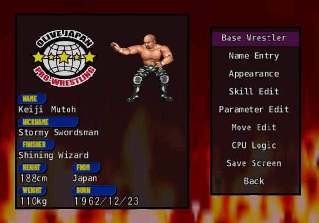
Edit Wrestler. The left panel is the profile as it stands.
The menu runs Base Wrestler, Name Entry, Appearance, Skill Edit, Parameter Edit, Move Edit, CPU Logic, Save Screen, Back. Start from Base Wrestler: copying someone close to what you want saves hours on moves and logic.
Edit Points
Everything that makes a wrestler good costs points from a budget. It starts at 150 and rises to 200, 250 and 300 as you unlock. The screen shows spent/budget. The built-in wrestlers run from 64 points (Tiger Jeet Singh) to 288 (Antonio Inoki), averaging 154, so a legend needs the full budget. Each Parameter point above 1 costs one point. Skill Edit's costs are below. Promotion, Class, Height, Weight, birth date, Hometown, Fight Style, Reversals, Theme and voices are free.
Best value first: Fight Style, Reversals and Hometown cost nothing, so choose freely. Don't buy Recovery, which does nothing. Breathing, on the other hand, is worth its 12.
Name Entry
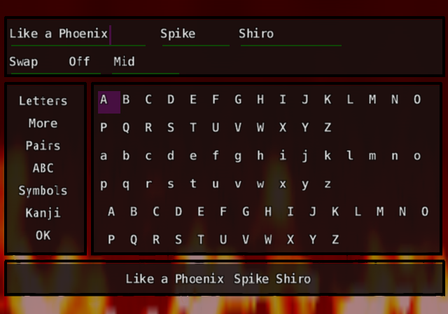
The English keyboard. Pairs is the fast way to fit a long name.
Four names: short, long, nickname and finisher. A name can't be only spaces. The translation replaces the original's kana keyboard with an English one, on pages Letters, More, Pairs, ABC, Symbols and OK.
○ enters a cell, □ deletes, × moves to the page menu, and △ or R1 switches between the fields. Room is 13 bytes for the short name, 19 for the long one and 25 for the nickname. A Pairs cell fits two letters in the space of one, so use it for long names.
Appearance
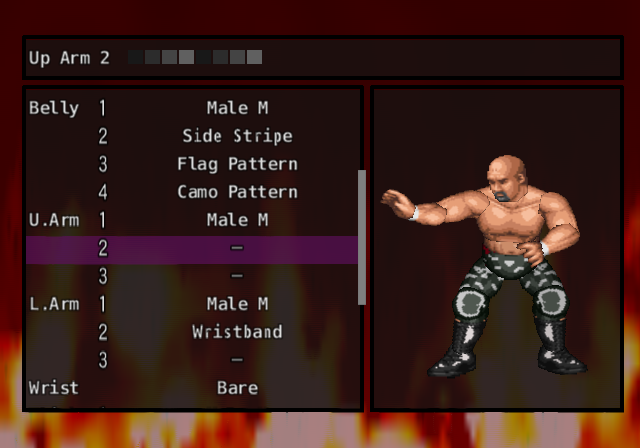
Wrestler Make: stance, size, face, then the body from chest to ankle.
Rows run Stance, Size, Face, Chest 1-4, Belly 1-4, Upper Arm 1-3, Lower Arm 1-3, Wrist, Thigh 1-4, Shin 1-4, Ankle. Four layers on a body part means you can stack a shirt, a pattern, scars and a number. Stance has twelve looks, from Strong to Referee, and Size is Male S, Male M, Male L or Women, which unlike height does matter in a match.
There are 387 faces, or 404 at the last unlock. Each part has eight colour ramps with an Eyedropper and Sample Gradient. Default costumes can't use custom colours.
Three shortcuts nothing tells you about.
Load a whole wrestler: on the Face row, hold □ and press Left or Right to load that face's complete wrestler: stance, size, parts, colours and outfit. A plain press only changes the face. Hold R1 to step by ten.
Copy and paste colours:○ on a body-part row opens the swatch bar. Hold □: L2 copies one swatch, R2 pastes it. Hold △: L2 copies four, R2 pastes four.
Auto gradation: in the swatch bar, set a ramp's first and last shades and press Select, and the game fills in a straight blend between them.
Skill Edit
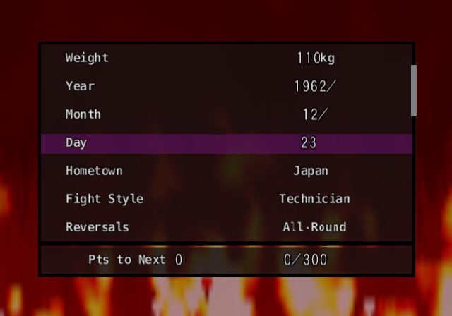
Skill Edit. The counter shows points spent from the budget.
The record of the wrestler, from Promotion to Voice. Fight Style and Reversals are separate: the style decides how he moves and what his moves cost, while Reversals decides how he answers yours. Fight Styles and Reversals explain both, and Criticals explains Critical. There are 47 themes and a list of shouts for each voice tone.
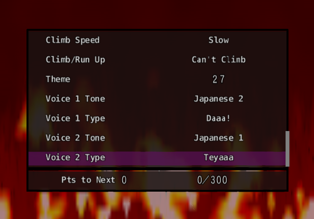
Voice tones and shouts, set separately for the two voice slots.
Hometown offers 32 places. Birth year can be unknown. Height (150-220 cm) and Weight (40-250 kg) are for show only: they have no effect in a match.
Which Critical to pick
Match it to the style. A Fighter gets the most from Striking, a Wrestling type from Suplex, a Power type from Power, and a Technician or Luchador from Technical. The table has the numbers. Finisher is free, and strong for most styles, but only on one move, and only below about 70% stamina.
Parameter Edit
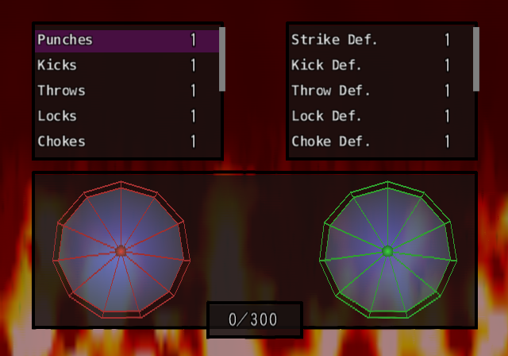
Eleven attack ratings and eleven defence ratings, shown 1 to 10.
Twenty-two ratings from 1 to 10. A move's two attack types choose which attack ratings it uses, and its two defence types choose which defence ratings resist it. So a wrestler who needs Kicks and Agility can leave Throws and Strength alone.
Move Edit
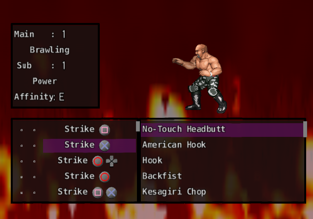
Move Edit. The left panel shows the move's types and how well it suits the wrestler.
Seventy-eight slots, one for each situation and button. Pick a slot, then a move from its list. The left panel shows the move's Main and Sub types with the wrestler's ratings in each, and Affinity, a grade of how well the main type suits his style. Affinity is advice only: it doesn't change damage. The markers F1 and F2 pick the shout, and FIN and SIG mark his finisher and his four signature moves, which hit harder and raise his spirit.
Strong grapple slots also offer every medium and weak grapple, and the same goes for strikes and back grapples. There are 43 lists in all. The Moves section has them, and every move's numbers.
Affinity
CPU Logic
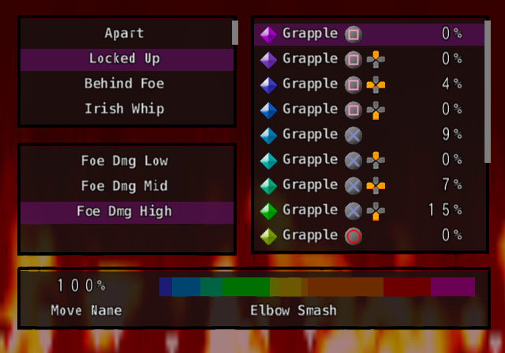
A situation, a damage band, and a bar of percentages that add to 100.
What your wrestler does when the CPU drives him. For each of twenty situations, split by how hurt the foe is, you share out 100% among his options. Every profile in the wrestler list shows its logic, so copy from someone who plays the way you want.
Good logic builds through a match: keep the big moves rare at Foe Dmg Low and let them rise. About 18% for a front-grapple finisher works well, and overusing fouls wrecks matches. Personality sets how fixed or cautious he is.
Save Screen
Quick Save, Quick Load and Quick Delete, with the list of System Data and Extra Edit Data 1-4. Save to the memory card afterwards.
Other Editors
Edit Promotion
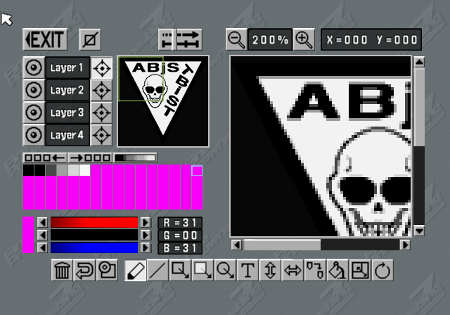
Logo Design has a real paint program: pens, shapes, text, fills, gradients and undo.
Five promotions, each with a name and short name, a logo and a ring colour. A promotion adds its ring to the Ring row. Sign wrestlers from the pool, at least one per class. Logo Design has Pen, Line, Copy, Clear, Zoom, Rotate, Box, Filled Box, Text, Fill, Undo, Load Sample, Flip, Circle, Palette Shift and Make Gradient.
Edit Referee
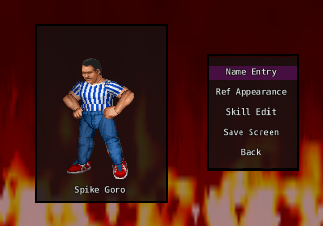
Eight edit referees, with their own count speeds and voices.
Name, appearance and skills: Pin Count, Foul Count, Ring-Out Count, Move Speed, each in five steps from Slow to Fast, then Run-In Time Check and Crash Down Time from Long to Short, and a voice. Eight slots.
Rename, Transfer, Recostume
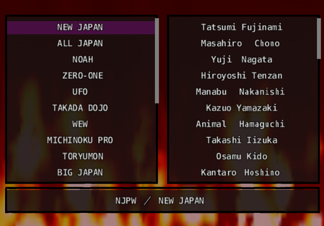
Rename Wrestler: new names for any of the 244.
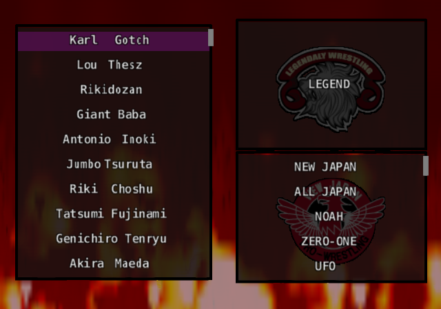
Transfer Wrestler: move anyone to another promotion.
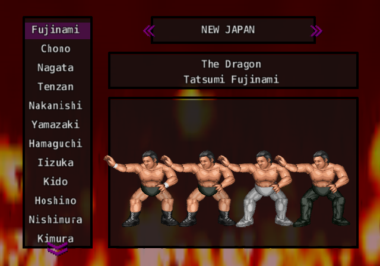
Recostume: redo any built-in wrestler's four outfits.
All 244. Click a wrestler for his full profile: every Skill Edit value, all 22 ratings, all 78 move slots with their buttons, and his CPU Logic. Each profile has its own link and a Compare box. Hover a move for its numbers.
The 45 Hidden Wrestlers
Who's locked until you clear a story
These stay off the select screens until any story scenario is cleared. They still appear in story matches, and in the extra preset teams.
Moves
Every move a wrestler can use. By list follows Move Edit's own lists. Flat table is one table: sort it to find the hardest-hitting grapple or the fastest strike. Moves tagged All Unlocked are only in those patches. Reserved and blank slots are left out.
Reading the Numbers
Stamina, Spirit, Breath: base damage to each gauge. With equal ratings one point takes about 0.39% of a gauge. The game multiplies Spirit by 1.375.
Neck, Arm, Back, Leg: damage to that part, before Durability.
Bleed: the percent chance per hit of drawing blood. Sickle Attack's 35% is the highest.
Speed: a relative figure for how long the attacker's motion runs. A Slap to Face is 31, a Falcon Arrow 229.
Attack and Defence: the main and sub types, one name when they match. Attack is the ratings the move uses, Defence the ones that resist it.
Illegal: the move draws a Foul Count. Submission: it can make him give up.
Critical: which critical types can fire from it.
The 43 Lists
New in Z
Of the 1,448 moves, 171 weren't in Fire Pro Wrestling D's list. Most are D's own downloadable moves, built in: all 57 that Spike released are on Z's disc. About 74 have no link to D at all, among them the Guard strikes, Stunner, Big Body Bomb, Screw Slam, Key Windmill, Single Wing Choke and a dozen taunts. Filter New in Z in the table to see them. Six moves exist in the data but in no list: the All Unlocked patches add Phoenix Kick, Eiffel de Parachute, Blazing Tornado, Super Muscle Buster, Deadly Go-Round and Jumping Splash to Move Edit.
Promotions
Each wrestler belongs to one of these. Some names exist only for the logos and the story.
Preset Teams
Twenty-nine at the start for Elimination Match, and ten more after one Victory Road course.
Unlocks
Everything comes from two counts: different story scenarios cleared, with any ending, and Victory Road courses cleared, any six. Clearing Misawa twice counts once.
What opens what
You need
It opens
Nothing
Four story scenarios, 199 wrestlers, 29 preset teams, 150 edit points.
1 story clear
The 45 hidden wrestlers, 200 edit points, Staff Credit in Options.
1 Victory Road course
Title Match, 10 extra preset teams, Staff Credit.
1 story clear and 1-2 courses, or 3 or more courses with fewer than 5 stories
250 edit points.
4 story clears
Atsushi Onita's story.
5 story clears
Kazushi Sakuraba's story.
5 story clears and 3 courses
300 edit points, 17 extra faces.
Edit points stay at 150 until a story is cleared, however many courses you finish.
The fast path: clear stories by the shortest ending (each walkthrough names it), since a story ends whether you win or lose. Then take the 8-Man Tag course, 6-Man Tag and one more for the three courses.
Extra faces 387 to 403 are joke and anime heads. Hold □ and press Left or Right on the Face row for their full presets. Two use bodies called Bear and Builder. No built-in wrestler uses any of them.
The seventh scenario can't be opened by play at all. See below.
The Hidden Seventh Scenario
Jushin Thunder Liger's story
The opening of the hidden scenario.
The disc holds a complete seventh script: Keiichi Yamada, a small boy in the New Japan dojo, becomes Jushin Thunder Liger. It's 125 scenes with a route split between New Japan and the UWF, and two endings. The game can't reach it. No list includes it, it starts at a developer chapter menu like a test file, and every match is only a card with a Win or Lose menu. Nothing in it raises the score, so one scene could never be seen.
This translation's All Unlocked patches finish the job: 26 real matches with their rules and venues, a Wild Pegasus built from Fire Pro Wrestling S's data, a young Yamada, and Game Over with Retry where the script calls for them. The story itself is the game's, translated. The walkthrough is in the Story section.
On the Disc but Not in the Game
Developer leftovers
Unused rings: seven ring designs with no menu entry, including Pale Blue, Lilac and NONNON. All Unlocked adds them.
Network Mode and Memory Card menu entries sit unused in the main menu's art, and the code for D's downloads survives with nothing to load.
A developers' mode select and match debug readouts: stamina, damage and pad input displays built for testing.
Unused music: five story-type songs no scene calls.
Six finished moves that no list offers, and 396 slots marked reserved.
Twelve story-only wrestlers who never reach the roster, among them Chavo Guerrero, Seiji Sakaguchi, Rick Rude, Ric Flair and Scott Steiner.
For anyone moving between this translation and the original, or reading a Japanese site.
Japanese
Romaji
Meaning
On screen in the translation
ワンナイトマッチ
wan naito matchi
one-night match
One Night Match
オープンリーグ
oopun riigu
open league
Open League
イリミネーションマッチ
iriminēshon matchi
elimination
Elimination Match
バトルロイヤル
batoru roiyaru
battle royal
Battle Royal
ヴィクトリーロード
bikutorii roodo
Victory Road
Victory Road
タイトルマッチ
taitoru matchi
title match
Title Match
エディットモード
editto moodo
edit mode
Edit Mode
試合形式
shiai keishiki
match format
Match Type
試合時間
shiai jikan
time limit
Time Limit
試合本数
shiai honsuu
number of falls
Falls
一本勝負 / 三本勝負
ippon shoubu / sanbon shoubu
one fall / best of three
1 Fall / 2 of 3 Falls
無制限
museigen
unlimited
No Limit
試合会場
shiai kaijou
venue
Venue
青コーナー / 赤コーナー
ao / aka koonaa
blue / red corner
Blue / Red Corner
対戦形式
taisen keishiki
matchup
Matchup
ロープチェック
roopu chekku
rope check
Rope Break
ランバージャック
ranbaajakku
lumberjack
Lumberjack
反則カウント
hansoku kaunto
foul count
Foul Count
場外カウント
jougai kaunto
ring-out count
Ring-Out Count
爆破時間
bakuha jikan
blast time
Blast Timer
金網爆破
kanaami bakuha
exploding cage
Exploding Cage
有刺鉄線
yuushi tessen
barbed wire
Barbed Wire
蛍光灯
keikoutou
fluorescent tubes
Tubes
総当たり戦
souatari sen
round robin
Round Robin
勝ち抜き戦
kachinuki sen
knockout
Elimination (format), knockout (help text)
綱引き
tsunahiki
tug-of-war
Tug
大乱闘
dairantou
big brawl
big battle royal
先鋒 次鋒 中堅 副将 大将
senpou, jihou, chuuken, fukushou, taishou
team positions
1st, 2nd, 3rd, 4th, Captain
勝 / 敗 / 分
shou, hai, bun
win, loss, draw
W, L, Draw
反則勝ち
hansoku gachi
win by foul
DQ Win
時間切れ引き分け
jikangire hikiwake
time-up draw
Time-Up Draw
両者リングアウト
ryousha ringu auto
double ring-out
Double Ring-Out
歴代王者紹介
rekidai ouja shoukai
past champions
Past Champions
タイトル返上
taitoru henjou
vacate the title
Vacate Title
闘いの記録
tatakai no kiroku
battle record
Record
防衛回数
bouei kaisuu
defenses
Defenses
団体
dantai
promotion
Promotion
団体移籍
dantai iseki
transfer
Transfer Wrestler
技装備
waza soubi
equip moves
Move Edit
階級
kaikyuu
weight class
Class
必殺技
hissatsu waza
finisher
Finisher
返し技
kaeshi waza
reversal
Reversals
回復力 / 呼吸法 / 精神力
kaifukuryoku, kokyuuhou, seishinryoku
recovery, breathing, spirit
Recovery, Breathing, Spirit
耐久度
taikyuudo
durability
Durability
流血
ryuuketsu
bleeding
Bleeding
構え
kamae
stance
Stance
性格
seikaku
personality
Personality
慎重度 / 柔軟性 / 協調性
shinchoudo, juunansei, kyouchousei
caution, flexibility, teamwork
Caution, Flexibility, Teamwork
こだわり度
kodawaridou
fixation
Fixation
相性
aishou
affinity
Affinity
主攻撃 / 副攻撃
shu / fuku kougeki
main / sub attack
Main / Sub
上書き
uwagaki
overwrite
Overwrite
未使用 / 新規 / 更新 / 保存済
mishiyou, shinki, koushin, hozonzumi
unused, new, updated, saved
Empty, New, Edited, Saved
中断
chuudan
suspend
Quit
続ける
tsuzukeru
continue
Continue
Q&A
Why do I keep losing lock-ups?
You're pressing early, or more than once. Press one button, once, as the wrestlers sink. See Grappling.
Why does my big move get reversed?
He's too fresh. Strong grapples are reversed nearly every time at full stamina. Use weak ones first. See Reversals.
Why won't my pin stick?
He isn't spent. A pin only sticks at about 8% stamina with spirit at 25% or less. See How Pins Are Won.
Where are the health bars?
There aren't any. Read the wrestlers' bodies.
How do I win a Sub Only match?
Hurt the part his submission targets, drain his spirit, and hold on. In a rope-break match, take him to the middle first.
How do I get the good ending?
Long, close matches. The game's story score rewards a good match more than a quick win. See How Story Mode Works.
Does Recovery do anything?
No. Spend on Breathing instead.
Why is Liger's story missing from my list?
It's only in the All Unlocked patches. The original game can't reach it.
Can I use my save from the Japanese game?
Saves from the original or another patch may not be compatible. Start a new save with the patch you plan to keep.
Can I play my edit wrestler in story mode?
No. Story mode uses its own wrestlers.
What's still in Japanese?
The staff credits, the title logo, promotion logos, in-world art such as signs and T-shirts, and the memory card save title.
Credits and Legal
This is a fan-made guide, not affiliated with or endorsed by Spike Chunsoft, S-NEO, Paon or any wrestler or promotion named here. Fire Pro Wrestling Z is theirs. The guide's text is shared under CC BY-SA 4.0. Screenshots are of the English build, included for reference.
Thanks to the players who wrote about this game: Bill Wood, Frank Chan, the reviewers of PSmk2, Retro-Wres and the Game Data Library. The route map's layout uses dagre (MIT License).
Fatman Dave's 2004 menu patch inspired the translation.
AI assisted with this guide.
Corrections
Found something wrong, or something missing? Open an issue.
Route Map
Every scene, match, choice, branch and ending of the seven scenarios. Names are the real-name patch's.
Open the route map spoilers: every scene, choice and ending